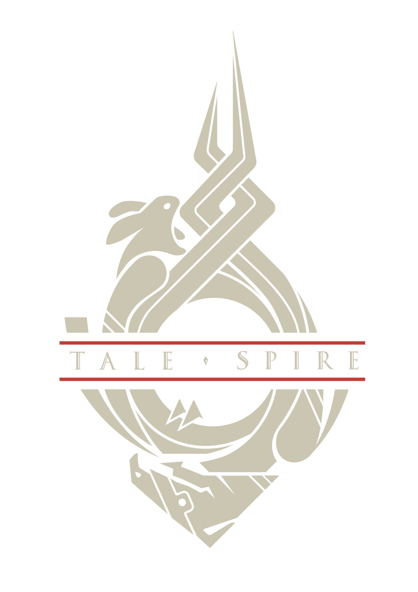

About me
Hello there, stranger! My name is Luis and I'm studying computer engineering at TU Wien and work at Bouncyrock Entertainment on TaleSpire.
In my free time I am part of the liquid rocketry project of TU Wien Space Team and I try to contribute to KDE Plasma Mobile.
If you want to learn more, you can check out my Projects page
You can find me at
Projects
I work on a bunch of different things, if you want to take a peek, look here
Recent Posts
All Blog Posts
- 2026-10-14:

Search Postmortem Part 5 - 2026-09-24: KDE Akademy 2026
- 2026-08-31: Search Postmortem Part 4
- 2026-08-24: Search Postmortem Part 3
- 2026-08-05: Search Postmortem Part 2
- 2026-07-29: Search Postmortem Part 1
- 2025-04-30: Plasma Sprint and more
- 2025-01-04: My last 6 months in KDE/Plasma Mobile
- 2024-07-28: What I did in KDE/Plasma Mobile land in July-ish
- 2024-05-05: Revamping Plasma Mobile Navigation Gestures